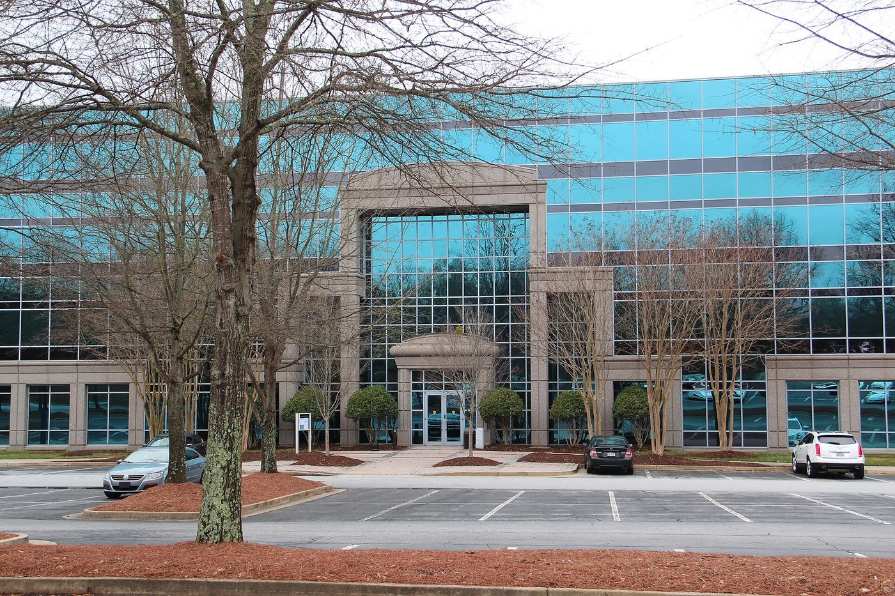

01

Fulton County · Georgia
Live Johns Creek listings, saved searches by kind of home, and what to know about the city along the Chattahoochee.
Living in Johns Creek
Johns Creek is a city in northeast Fulton County along the Chattahoochee River.
Its area began with early 1800s trading posts and crossroads communities, the name came into use for a place in 1981 when developers called a mixed-use business community Technology Park/Johns Creek, and the city was incorporated on December 1, 2006 after a July 2006 voter referendum. The city's comprehensive plan divides it into eight Community Areas.
Relocating to Johns Creek for workJohns Creek, Alpharetta or Cumming?

At a glance
42mi
Hartsfield-Jackson Airport
29mi
Downtown Atlanta
9mi
Alpharetta
Driving miles from Johns Creek City Hall by OpenStreetMap routing, October 2026. Time on the road depends on traffic.
Autrey Mill Nature Preserve & Heritage Center
Ravine forest with more than three miles of walking trails and a Heritage Village of late 1800s farmstead buildings, including a general store.
Park behind City Hall on Lakefield Drive with a 15-foot-wide elevated trail, a bandshell and amphitheater, terraced seating and pond overlooks.
Park at 3150 Old Alabama Road with trails, athletic fields, tennis and pickleball courts, the Park Place senior center.
Community park at the northeastern tip of the city with a 1.1-mile nature trail, a pond overlook, a fishing pier and a cricket pitch.
Search Johns Creek
Start with one of these searches, or browse the newest Johns Creek listings below. Every listing comes from the MLS through IDX Broker, updated as it changes.
01

02

03

04
Newest first

$1,450,000
9845 Riverstone Overlook Johns Creek, GA 30097
5 beds · 5.5 baths · 5,210 sq ft
Listed by CENTURY 21 Results

$825,000
11020 Medlock Ridge Lane Johns Creek, GA 30097
5 beds · 4 baths · 3,960 sq ft
Listed by CENTURY 21 Results

$699,000
4510 Autumn Mill Court Johns Creek, GA 30022
4 beds · 3.5 baths · 3,240 sq ft
Listed by CENTURY 21 Results

$975,000
6230 Shakerag Bluff Johns Creek, GA 30097
5 beds · 4.5 baths · 4,380 sq ft
Listed by CENTURY 21 Results
Selling in Johns Creek? Get an instant home value, or read Sarah's guide to preparing a Johns Creek home for sale.
The city's 2018 Comprehensive Plan divides Johns Creek into eight Community Areas: Autrey Mill, Johns Creek North, Medlock, Newtown, Ocee, River Estates, Shakerag and Tech Park. Much of the housing is in planned residential subdivisions. The plan says most Newtown subdivisions were built in the 1980s and early 1990s, that Ocee has the largest number of small to medium subdivisions from the 1980s and 1990s, and that Autrey Mill and Medlock are dominated by large-scale subdivisions.
River Estates, along the Chattahoochee River, is dominated by the Country Club of the South subdivision. Tech Park, begun in the mid-1980s, mixes office buildings, retail and residential subdivisions.
Johns Creek City Hall is at 11360 Lakefield Drive in Tech Park, and The Boardwalk at Town Center behind it has a 15-foot-wide elevated trail, a bandshell and amphitheater, and pond overlooks. Newtown Park, on Old Alabama Road, has trails, athletic fields, tennis and pickleball courts, and the Park Place senior center in the former Newtown school.
Autrey Mill Nature Preserve & Heritage Center combines walking trails with a village of relocated 1800s farmstead buildings. The city lists five access points to the Chattahoochee River, and Fulton County Library System branches in Johns Creek include Ocee Library and Northeast Spruill Oaks Library.
Johns Creek's connected trailsParks and greenways in Johns Creek
A few questions are worth settling before you write an offer on a Johns Creek home.
Day to day
School information is factual and by district. Always confirm a specific address in the district's school finder.
Questions
Fulton County, in the northeast part of the county. The Chattahoochee River and Gwinnett County bound the city on the south, and McGinnis Ferry Road and Forsyth County bound it on the northeast.
It was incorporated on December 1, 2006, after House Bill 1321 passed and northeast Fulton County voters approved it in a July 2006 referendum.
Fulton County Schools.
Not always. Johns Creek shares postal codes with Alpharetta, Roswell, Duluth and Suwanee, so a property inside the city can carry a neighboring city's name in its mailing address. The city's website has a Confirm Address tool for checking city limits.
Resources
Nearby

Explore

Explore

Explore
Let's Talk
Tell Sarah what you are looking for in Johns Creek, and she will set up a search or walk you through a neighborhood.